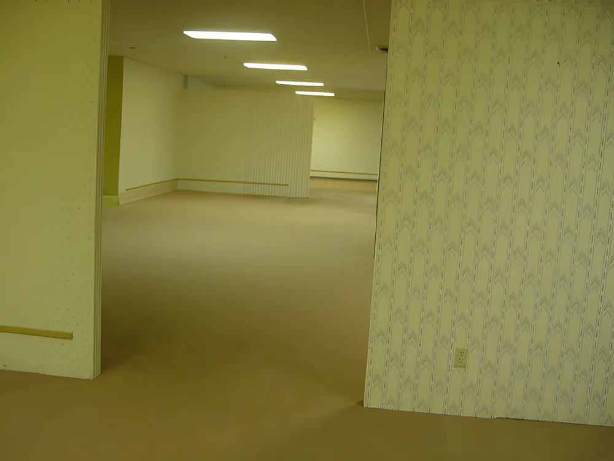

레벨 0 (Level 0)
| 레벨 0: "로비" (The Lobby) | |
|---|---|
|
 |
|
| 생존 등급 | Class 1 |
| 안전성 | 안전함 |
| 엔티티 수 | 최소 미만 |
백룸의 첫 번째 레벨이자 가장 널리 알려진 공간입니다. 현실 세계에서 우연히 벽이나 바닥을 통해 물리 엔진 오류처럼 빠져나가는 현상인 "노클립(Noclip)"이 발생하면 대부분 이곳으로 처음 떨어지게 됩니다.
1. 개요
이 공간은 끝없이 펼쳐진 빈 방들과 변색된 노란색 벽지, 그리고 축축하고 낡은 카펫이 무한히 반복되는 오피스 빌딩의 형태를 띠고 있습니다. 구조가 고정되어 있지 않고 실시간으로 변하기 때문에 나침반이나 지도 조작이 불가능합니다.
2. 특징
오래된 오피스용 형광등이 사방에서 일정한 주파수로 웅웅거리는 기분 나쁜 백색 소음을 냅니다. 이 소리에 오랜 시간 노출되면 정신을 잃거나 환청을 듣기 쉬우므로 주의해야 합니다. 기본적으로 인간을 해치는 괴생명체(엔티티)는 거의 발견되지 않습니다.
3. 생존 가이드
극도의 고립감 때문에 미쳐버릴 수 있으므로, 탈출구를 찾지 못했다면 소지하고 있는 아몬드 워터를 주기적으로 마셔 정신력(Sanity)을 유지해야 합니다. 다른 방랑자를 만나더라도 환각일 확률이 높으니 거리를 두는 것이 안전합니다.
실시간 인기 검색어